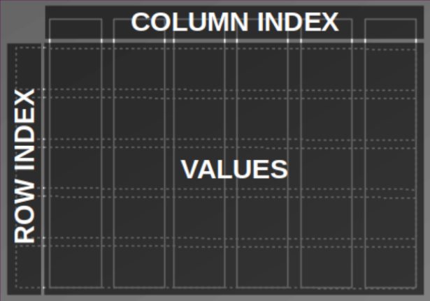
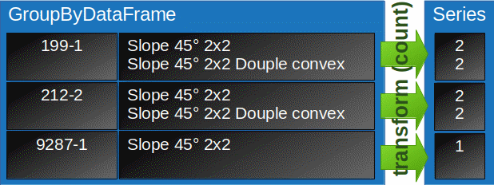

Original article published at datamuni.com.
SQL vs. and Pandas
I love SQL. It’s been around for decades to arrange and analyse data. Data is kept in tables which are stored in a relational structure. Consistancy and data integraty is kept in mind when designing a relational data model. However, when it comes to machine learning other data structures such as matrices and tensors become important to feat the underlying algorithms and make data processing more efficient. That’s where Pandas steps in. From a SQL developer perspective it is the library to close the gap between your data storage and the ml frameworks.
This blog post shows how to translate some common and some advanced techniques from SQL to Pandas step-by-step. I didn’t just want to write a plain cheat sheet (actually Pandas has a good one to get started: Comparison SQL (Ref. 1)). Rather I want to unwind some concepts that might be helpful for a SQL developer who now and then deals with Pandas.
The coding examples are built upon a Lego Dataset (Ref. 2), that contains a couple of tables with data about various lego sets. > To follow along I’ve provided a notebook (Res. 1) on kaggle, where you can play with the blog examples either using SQLite or Bigquery. You can also checkout a docker container (Res. 2) to play on your home machine.
Missing bricks
First listen to this imaginary dialogue that guides us throug the coding:
: I miss all red bricks of the Lego Pizzeria. I definetly need a new one.
: Don’t worry. We can try to solve this with data. That will be fun. :-)
: (!@#%&) You’re kidding, right?
Now that we have a mission we are ready to code and figuere out how to deal with missing bricks. First we inspect the tables. They are organized as shown in the relational diagram (Fig. 1).

Fig. 1: Data model (source: Lego dataset (Ref. 2))
There are colors, parts, sets and inventories. We should start by searching for the Pizzeria in the sets table using the set number (41311).

Fig. 2: Lego Box with set number
A simple Filter (The behaviour of brackets.)
A simple like-filter on the sets table will return the set info.
SELECT *
FROM sets s
WHERE s.set_num like '41311%'There are several ways to apply a filter in Pandas. The most SQL-like code utilizes the query-function which basicaly substitutes the where clause.
df_sets.query("set_num.str.contains('41311')", engine='python')| set_num | name | year | theme_id | num_parts | |
|---|---|---|---|---|---|
| 3582 | 41311-1 | Heartlake Pizzeria | 2017 | 494 | 287 |
Since the query function expects a String as input parameter we loose syntax highlighting and syntax checking for our filter expression.
Therefore a more commonly used expression consists of the bracket notation (The behaviour of the bracket notation of a class in python is implementated in the class function __getitem__)
See how we can apply an equals filter using brackets.
df_sets.query("set_num == '41311-1'")
# or
df_sets[df_sets.set_num == '41311-1']
# or
df_sets[df_sets['set_num'] == '41311-1']| set_num | name | year | theme_id | num_parts | |
|---|---|---|---|---|---|
| 3582 | 41311-1 | Heartlake Pizzeria | 2017 | 494 | 287 |
There is a lot going on in this expression.
Let’s take it apart.
df_sets['set_num'] returns a single column (a Pandas.Series object). A Pandas DataFrame is basically a collection of Series. Additionaly there is a row index (often just called index) and a column index (columnnames). Think of a column store database.

Fig. 3: Elements of a DataFrame
Applying a boolean condition (== '41311-1') to a Series of the DataFrame (df_sets['set_num']) will result in a boolean collection of the size of the column.
bool_coll = df_sets['set_num'] == '41311-1'
# only look at the position 3580 - 3590 of the collection
bool_coll[3580:3590] 3580 False
3581 False
3582 True
3583 False
3584 False
3585 False
3586 False
3587 False
3588 False
3589 False
Name: set_num, dtype: boolThe boolean collection now gets past to the DataFrame and filters the rows:
df_sets[bool_coll]
# or
df_sets[df_sets['set_num'] == '41311-1']Depending on what type of object we pass to the square brackets the outcome result in very different behaviors.
We have already seen in the example above that if we pass a boolean collection with the size of number of rows, the collection is been handled as a row filter.
But if we pass a column name or a list of column names to the brackets instead, the given columns are selected like in the SELECT clause of an SQL statement.
SELECT name,
year
FROM lego.sets;=>
df_sets[['name', 'year']]Row filter and column selection can be combined like this:
SELECT s.name,
s.year
FROM lego.sets s
WHERE s.set_num = '41311-1';=>
df_temp = df_sets[df_sets['set_num'] == '41311-1']
df_temp[['name','year']]
# or simply:
df_sets[df_sets['set_num'] == '41311-1'][['name','year']]| name | year | |
|---|---|---|
| 3582 | Heartlake Pizzeria | 2017 |
Indexing (What actually is an index?)
Another way to access a row in Pandas is by using the row index. With the loc function (and brackets) we select the Pizzeria and another arbitrary set. We use the row numbers to filter the rows.
df_sets.loc[[236, 3582]]| set_num | name | year | theme_id | num_parts | |
|---|---|---|---|---|---|
| 236 | 10255-1 | Assembly Square | 2017 | 155 | 4009 |
| 3582 | 41311-1 | Heartlake Pizzeria | 2017 | 494 | 287 |
If we inspect the DataFrame closely we realize that it doesn’t realy look like a simple table but rather like a cross table.
The first column on the left is a row index and the table header is the column index. In the center the values of the columns are displayed (see Fig. 3).
If we think of the values as a matrix the rows are dimension 0 and columns are dimension 1. The dimension is often used in DataFrame functions as axis parameter. E.g. dropping columns can be done using dimensional information:
-- EXCEPT in SELECT clause only works with BIGQUERY
SELECT s.* EXCEPT s.year
FROM lego.sets s;==>
df_sets.drop(['year'], axis = 1).head(5)| set_num | name | theme_id | num_parts | |
|---|---|---|---|---|
| 0 | 00-1 | Weetabix Castle | 414 | 471 |
| 1 | 0011-2 | Town Mini-Figures | 84 | 12 |
| 2 | 0011-3 | Castle 2 for 1 Bonus Offer | 199 | 2 |
| 3 | 0012-1 | Space Mini-Figures | 143 | 12 |
| 4 | 0013-1 | Space Mini-Figures | 143 | 12 |
The indexes can be accessed with the index and columns variable. axes contains both.
df_sets.index # row index
df_sets.columns # column index
df_sets.axes # both [RangeIndex(start=0, stop=11673, step=1),
Index(['set_num', 'name', 'year', 'theme_id', 'num_parts'], dtype='object')]The row index doesn’t necessarely be the row number. We can also convert a column into a row index.
df_sets.set_index('set_num').head()| name | year | theme_id | num_parts | |
|---|---|---|---|---|
| set_num | ||||
| 00-1 | Weetabix Castle | 1970 | 414 | 471 |
| 0011-2 | Town Mini-Figures | 1978 | 84 | 12 |
| 0011-3 | Castle 2 for 1 Bonus Offer | 1987 | 199 | 2 |
| 0012-1 | Space Mini-Figures | 1979 | 143 | 12 |
| 0013-1 | Space Mini-Figures | 1979 | 143 | 12 |
It is also possible to define hierarchicle indicies for multi dimensional representation.
df_sets.set_index(['year', 'set_num']).sort_index(axis=0).head() # axis = 0 => row index| name | theme_id | num_parts | ||
|---|---|---|---|---|
| year | set_num | |||
| 150 | 700.1.1-1 | Individual 2 x 4 Bricks | 371 | 10 |
| 700.1.2-1 | Individual 2 x 2 Bricks | 371 | 9 | |
| 700.A-1 | Automatic Binding Bricks Small Brick Set (Lego… | 366 | 24 | |
| 700.B.1-1 | Individual 1 x 4 x 2 Window (without glass) | 371 | 7 | |
| 700.B.2-1 | Individual 1 x 2 x 3 Window (without glass) | 371 | 7 |
Sometimes it is usefull to reset the index, hence reset the row numbers.
df_sets.loc[[236, 3582]].reset_index(drop = True) # set drop = False to keep the old index as new column| set_num | name | year | theme_id | num_parts | |
|---|---|---|---|---|---|
| 0 | 10255-1 | Assembly Square | 2017 | 155 | 4009 |
| 1 | 41311-1 | Heartlake Pizzeria | 2017 | 494 | 287 |
Now we get a sence what is meant by an index in Pandas in contrast to SQL.
Indices in SQL are hidden data structures (in form of e.g. b-trees or hash-tables). They are built to access data more quickly, to avoid full table scans when appropriate or to mantain consistancies when used with constraints.
An index in Pandas can rather be seen as a dimensional access to the data values. They can be distingueshed between row and column indices.
Joins (Why merge doesn’t mean upsert.)
: What are we gonna do now about my missing parts?
: We don’t have all the information we need, yet. We need to join the other tables.
Though there is a function called join to join DataFrames I always use the merge function. This can be a bit confusing, when you are used to Oracle where merge means upsert/updelete rather then combining two tables.
When combining two DataFrames with the merge function in Pandas we have to define the relationship more explicitly. If you are used to SQL thats what you want.
In contrast the join function implicitly combines the DataFrames by their index or column names. It also enables multiply DataFrame joins in one statement as long as the join columns are matchable by name.
SELECT *
FROM sets s
INNER JOIN
inventories i
ON s.set_num = i.set_num -- USING (set_num)
LIMIT 5| set_num | name | year | theme_id | num_parts | id | version | set_num_1 |
|---|---|---|---|---|---|---|---|
| 00-1 | Weetabix Castle | 1970 | 414 | 471 | 5574 | 1 | 00-1 |
| 0011-2 | Town Mini-Figures | 1978 | 84 | 12 | 5087 | 1 | 0011-2 |
| 0011-3 | Castle 2 for 1 Bonus Offer | 1987 | 199 | 2 | 2216 | 1 | 0011-3 |
| 0012-1 | Space Mini-Figures | 1979 | 143 | 12 | 1414 | 1 | 0012-1 |
| 0013-1 | Space Mini-Figures | 1979 | 143 | 12 | 4609 | 1 | 0013-1 |
These Pandas statements all do the same:
df_sets.merge(df_inventories, how = 'inner', on = 'set_num').head(5)
#or if columns are matching
df_sets.merge(df_inventories, on = 'set_num').head(5)
#or explicitly defined columns
df_sets.merge(df_inventories, how = 'inner', left_on = 'set_num', right_on = 'set_num').head(5)| set_num | name | year | theme_id | num_parts | id | version | |
|---|---|---|---|---|---|---|---|
| 0 | 00-1 | Weetabix Castle | 1970 | 414 | 471 | 5574 | 1 |
| 1 | 0011-2 | Town Mini-Figures | 1978 | 84 | 12 | 5087 | 1 |
| 2 | 0011-3 | Castle 2 for 1 Bonus Offer | 1987 | 199 | 2 | 2216 | 1 |
| 3 | 0012-1 | Space Mini-Figures | 1979 | 143 | 12 | 1414 | 1 |
| 4 | 0013-1 | Space Mini-Figures | 1979 | 143 | 12 | 4609 | 1 |
To see witch parts are needed for the Pizzeria we combine some tables. We look for the inventory of the set and gather all parts. Then we get color and part category information.
We end up with an inventory list:
SELECT s.set_num,
s.name set_name,
p.part_num,
p.name part_name,
ip.quantity,
c.name color,
pc.name part_cat
FROM sets s,
inventories i,
inventory_parts ip,
parts p,
colors c,
part_categories pc
WHERE s.set_num = i.set_num
AND i.id = ip.inventory_id
AND ip.part_num = p.part_num
AND ip.color_id = c.id
AND p.part_cat_id = pc.id
AND s.set_num in ('41311-1')
AND i.version = 1
AND ip.is_spare = 'f'
ORDER BY p.name, s.set_num, c.name
LIMIT 10| set_num | set_name | part_num | part_name | quantity | color | part_cat |
|---|---|---|---|---|---|---|
| 41311-1 | Heartlake Pizzeria | 25269pr03 | 1/4 CIRCLE TILE 1X1 with Pizza Print | 4 | Tan | Tiles Printed |
| 41311-1 | Heartlake Pizzeria | 32807 | BRICK 1X1X1 1/3, W/ ARCH | 4 | Red | Other |
| 41311-1 | Heartlake Pizzeria | 6190 | Bar 1 x 3 (Radio Handle, Phone Handset) | 1 | Red | Bars, Ladders and Fences |
| 41311-1 | Heartlake Pizzeria | 30374 | Bar 4L (Lightsaber Blade / Wand) | 1 | Light Bluish Gray | Bars, Ladders and Fences |
| 41311-1 | Heartlake Pizzeria | 99207 | Bracket 1 x 2 - 2 x 2 Inverted | 1 | Black | Plates Special |
| 41311-1 | Heartlake Pizzeria | 2453b | Brick 1 x 1 x 5 with Solid Stud | 4 | Tan | Bricks |
| 41311-1 | Heartlake Pizzeria | 3004 | Brick 1 x 2 | 4 | Light Bluish Gray | Bricks |
| 41311-1 | Heartlake Pizzeria | 3004 | Brick 1 x 2 | 3 | Tan | Bricks |
| 41311-1 | Heartlake Pizzeria | 3004 | Brick 1 x 2 | 1 | White | Bricks |
| 41311-1 | Heartlake Pizzeria | 3245b | Brick 1 x 2 x 2 with Inside Axle Holder | 2 | White | Bricks |
Lets create a general inventory_list as view and make the statement more readable and comparable with ANSI-syntax (separating filters/predicates from join conditions).
DROP VIEW IF EXISTS inventory_list;
CREATE VIEW inventory_list AS
SELECT s.set_num,
s.name set_name,
s.theme_id,
s.num_parts,
p.part_num,
ip.quantity,
p.name part_name,
c.name color,
pc.name part_cat
FROM sets s
INNER JOIN
inventories i
USING (set_num)
INNER JOIN
inventory_parts ip
ON (i.id = ip.inventory_id)
INNER JOIN
parts p
USING (part_num)
INNER JOIN
colors c
ON (ip.color_id = c.id)
INNER JOIN
part_categories pc
ON (p.part_cat_id = pc.id)
WHERE i.version = 1
AND ip.is_spare = 'f';Now we translate the view to Pandas. We see how the structure relates to sql. The parameter how defines the type of join (here: inner), on represents the USING clause whereas left_on and right_on stand for the SQL ON condition.
In SQL usually an optimizer defines based in rules or statistics the execution plan (the order in which the tables are accessed, combined and filtered). I’m not sure if Pandas follows a similar approache. To be safe, I assume the order and early column dropping might matter for performance and memory management.
df_inventory_list = df_sets[['set_num', 'name', 'theme_id', 'num_parts']] \
.merge(
df_inventories[df_inventories['version'] == 1][['id', 'set_num']],
how = 'inner',
on = 'set_num'
) \
.merge(
df_inventory_parts[df_inventory_parts['is_spare'] == 'f'][['inventory_id', 'part_num', 'color_id', 'quantity']],
how = 'inner',
left_on = 'id',
right_on = 'inventory_id'
) \
.merge(
df_parts[['part_num', 'name', 'part_cat_id']],
how = 'inner',
on = 'part_num'
) \
.merge(
df_colors[['id', 'name']],
how = 'inner',
left_on = 'color_id',
right_on = 'id'
) \
.merge(
df_part_categories[['id', 'name']],
how = 'inner',
left_on = 'part_cat_id',
right_on = 'id'
)
# remove some columns and use index as row number (reset_index)
df_inventory_list = df_inventory_list.drop(['id_x', 'inventory_id', 'color_id', 'part_cat_id', 'id_y', 'id'], axis = 1).reset_index(drop = True)
# rename columns
df_inventory_list.columns = ['set_num', 'set_name', 'theme_id', 'num_parts', 'part_num', 'quantity', 'part_name', 'color', 'part_cat']Lots of code here. So we better check if our Pandas code matches the results of our SQL code.
Select the inventory list for our example, write it to a DataFrame (df_test_from_sql) and compare the results.
df_test_from_sql <<
SELECT il.*
FROM inventory_list il
WHERE il.set_num in ('41311-1')
ORDER BY
il.part_name,
il.set_num,
il.color
LIMIT 10;| set_num | set_name | theme_id | num_parts | part_num | quantity | part_name | color | part_cat |
|---|---|---|---|---|---|---|---|---|
| 41311-1 | Heartlake Pizzeria | 494 | 287 | 25269pr03 | 4 | 1/4 CIRCLE TILE 1X1 with Pizza Print | Tan | Tiles Printed |
| 41311-1 | Heartlake Pizzeria | 494 | 287 | 32807 | 4 | BRICK 1X1X1 1/3, W/ ARCH | Red | Other |
| 41311-1 | Heartlake Pizzeria | 494 | 287 | 6190 | 1 | Bar 1 x 3 (Radio Handle, Phone Handset) | Red | Bars, Ladders and Fences |
| 41311-1 | Heartlake Pizzeria | 494 | 287 | 30374 | 1 | Bar 4L (Lightsaber Blade / Wand) | Light Bluish Gray | Bars, Ladders and Fences |
| 41311-1 | Heartlake Pizzeria | 494 | 287 | 99207 | 1 | Bracket 1 x 2 - 2 x 2 Inverted | Black | Plates Special |
| 41311-1 | Heartlake Pizzeria | 494 | 287 | 2453b | 4 | Brick 1 x 1 x 5 with Solid Stud | Tan | Bricks |
| 41311-1 | Heartlake Pizzeria | 494 | 287 | 3004 | 4 | Brick 1 x 2 | Light Bluish Gray | Bricks |
| 41311-1 | Heartlake Pizzeria | 494 | 287 | 3004 | 3 | Brick 1 x 2 | Tan | Bricks |
| 41311-1 | Heartlake Pizzeria | 494 | 287 | 3004 | 1 | Brick 1 x 2 | White | Bricks |
| 41311-1 | Heartlake Pizzeria | 494 | 287 | 3245b | 2 | Brick 1 x 2 x 2 with Inside Axle Holder | White | Bricks |
# test
df_test_from_df = df_inventory_list[df_inventory_list['set_num'].isin(['41311-1'])].sort_values(by=['part_name', 'set_num', 'color']).head(10)
df_test_from_df| set_num | set_name | theme_id | num_parts | part_num | quantity | part_name | color | part_cat | |
|---|---|---|---|---|---|---|---|---|---|
| 507161 | 41311-1 | Heartlake Pizzeria | 494 | 287 | 25269pr03 | 4 | 1/4 CIRCLE TILE 1X1 with Pizza Print | Tan | Tiles Printed |
| 543292 | 41311-1 | Heartlake Pizzeria | 494 | 287 | 32807 | 4 | BRICK 1X1X1 1/3, W/ ARCH | Red | Other |
| 266022 | 41311-1 | Heartlake Pizzeria | 494 | 287 | 6190 | 1 | Bar 1 x 3 (Radio Handle, Phone Handset) | Red | Bars, Ladders and Fences |
| 273113 | 41311-1 | Heartlake Pizzeria | 494 | 287 | 30374 | 1 | Bar 4L (Lightsaber Blade / Wand) | Light Bluish Gray | Bars, Ladders and Fences |
| 306863 | 41311-1 | Heartlake Pizzeria | 494 | 287 | 99207 | 1 | Bracket 1 x 2 - 2 x 2 Inverted | Black | Plates Special |
| 47206 | 41311-1 | Heartlake Pizzeria | 494 | 287 | 2453b | 4 | Brick 1 x 1 x 5 with Solid Stud | Tan | Bricks |
| 50211 | 41311-1 | Heartlake Pizzeria | 494 | 287 | 3004 | 4 | Brick 1 x 2 | Light Bluish Gray | Bricks |
| 45716 | 41311-1 | Heartlake Pizzeria | 494 | 287 | 3004 | 3 | Brick 1 x 2 | Tan | Bricks |
| 16485 | 41311-1 | Heartlake Pizzeria | 494 | 287 | 3004 | 1 | Brick 1 x 2 | White | Bricks |
| 22890 | 41311-1 | Heartlake Pizzeria | 494 | 287 | 3245b | 2 | Brick 1 x 2 x 2 with Inside Axle Holder | White | Bricks |
# assert equals
if not USE_BIGQUERY:
df_test_from_sql = df_test_from_sql.DataFrame()
pd._testing.assert_frame_equal(df_test_from_sql, df_test_from_df.reset_index(drop = True))The results are equal as expected.
Since we are only interested in the red bricks we create a list of those missing parts.
SELECT *
FROM inventory_list il
WHERE il.set_num = '41311-1'
AND part_cat like '%Brick%'
AND color = 'Red'
ORDER BY
il.color,
il.part_name,
il.set_num;| set_num | set_name | theme_id | num_parts | part_num | quantity | part_name | color | part_cat |
|---|---|---|---|---|---|---|---|---|
| 41311-1 | Heartlake Pizzeria | 494 | 287 | 3039 | 1 | Slope 45° 2 x 2 | Red | Bricks Sloped |
| 41311-1 | Heartlake Pizzeria | 494 | 287 | 3045 | 2 | Slope 45° 2 x 2 Double Convex | Red | Bricks Sloped |
We need to watchout for the brackets when combining filters in DataFrames.
df_missing_parts = df_inventory_list[(df_inventory_list['set_num'] == '41311-1') &
(df_inventory_list['part_cat'].str.contains("Brick")) &
(df_inventory_list['color'] == 'Red')
].sort_values(by=['color', 'part_name', 'set_num']).reset_index(drop = True)
df_missing_parts| set_num | set_name | theme_id | num_parts | part_num | quantity | part_name | color | part_cat | |
|---|---|---|---|---|---|---|---|---|---|
| 0 | 41311-1 | Heartlake Pizzeria | 494 | 287 | 3039 | 1 | Slope 45° 2 x 2 | Red | Bricks Sloped |
| 1 | 41311-1 | Heartlake Pizzeria | 494 | 287 | 3045 | 2 | Slope 45° 2 x 2 Double Convex | Red | Bricks Sloped |
: There we go, we are missing one 2x2 brick and tw0 2x2 double convex.
: Yup, that’s the roof of the fireplace. I knew that before.
Conditional Joins and Aggregation (Almost done!)
Next we search for sets that contain the missing parts. The quantity of the parts in the found sets must be greater or equal the quantity of the missing parts.
In SQL it is done with an conditional join il.quantity >= mp.quantity.
sets_with_missing_parts <<
-- A list of missing parts
WITH missing_parts AS (
SELECT il.set_name,
il.part_num,
il.part_name,
il.color,
il.quantity
FROM inventory_list il
WHERE il.set_num = '41311-1'
AND il.part_cat like '%Brick%'
AND il.color = 'Red'
)
-- Looking for set that contains as much of the missing parts as needed
SELECT mp.set_name as searching_for_set,
il.set_num,
il.set_name,
il.part_name,
-- total number of parts per set
il.num_parts,
-- how many of the missing parts were found in the set
COUNT(*) OVER (PARTITION BY il.set_num) AS matches_per_set
FROM inventory_list il
INNER JOIN
missing_parts mp
ON (il.part_num = mp.part_num
AND il.color = mp.color
-- searching for a set that contains at least as much parts as there are missing
AND il.quantity >= mp.quantity
)
-- don't search in the Pizzeria set
WHERE il.set_num <> '41311-1'
-- prioritize sets with all the missing parts and as few parts as possible
ORDER BY
matches_per_set DESC,
il.num_parts,
il.set_num,
il.part_name
LIMIT 16Conditional Join
There is no intuitive way to do a conditional join on DataFrames. The easiest I’ve seen so far is a two step solution. As substitution for the SQL WITH-clause we can reuse df_missing_parts.
# 1. merge on the equal conditions
df_sets_with_missing_parts = df_inventory_list.merge(df_missing_parts, how = 'inner', on = ['part_num', 'color'], suffixes = ('_found', '_missing'))
# 2. apply filter for the qreater equals condition
df_sets_with_missing_parts = df_sets_with_missing_parts[df_sets_with_missing_parts['quantity_found'] >= df_sets_with_missing_parts['quantity_missing']]
# select columns
cols = ['set_num', 'set_name', 'part_name', 'num_parts']
df_sets_with_missing_parts = df_sets_with_missing_parts[['set_name_missing'] + [c + '_found' for c in cols]]
df_sets_with_missing_parts.columns = ['searching_for_set'] + colsAggregation
In the next step the aggregation of the analytic function
COUNT(*) OVER (PARTITION BY il.set_num) matches_per_setneeds to be calculated. Hence the number of not-NaN values will be counted per SET_NUM group and assigned to each row in a new column (matches_per_set).
But before translating the analytic function, let’s have a look at a regular aggregation, first. Say, we simply want to count the entries per set_num on group level (without assigning the results back to the original group entries) and also sum up all parts of a group. Then the SQL would look something like this:
SELECT s.set_num,
COUNT(*) AS matches_per_set
SUM(s.num_parts) AS total_num_parts
FROM ...
WHERE ...
GROUP BY
s.set_num;All selected columns must either be aggregated by a function (COUNT, SUM) or defined as a group (GROUP BY). The result is a two column list with the group set_num and the aggregations matches_per_set and total_num_part.
Now see how the counting is done with Pandas.
df_sets_with_missing_parts.groupby(['set_num']).count() .sort_values('set_num', ascending = False)
# for sum and count:
# df_sets_with_missing_parts.groupby(['set_num']).agg(['count', 'sum']) | searching_for_set | set_name | part_name | num_parts | |
|---|---|---|---|---|
| set_num | ||||
| llca8-1 | 1 | 1 | 1 | 1 |
| llca21-1 | 1 | 1 | 1 | 1 |
| fruit1-1 | 1 | 1 | 1 | 1 |
| MMMB026-1 | 1 | 1 | 1 | 1 |
| MMMB003-1 | 1 | 1 | 1 | 1 |
| … | … | … | … | … |
| 10021-1 | 1 | 1 | 1 | 1 |
| 088-1 | 1 | 1 | 1 | 1 |
| 080-1 | 2 | 2 | 2 | 2 |
| 066-1 | 1 | 1 | 1 | 1 |
| 00-4 | 1 | 1 | 1 | 1 |
Wow, that’s different! The aggregation function is applied to every column independently and the group is set as row index. But it is also possible to define the aggregation function for each column explicitly like in SQL:
df_sets_with_missing_parts.groupby(['set_num'], as_index = False) \
.agg(matches_per_set = pd.NamedAgg(column = "set_num", aggfunc = "count"),
total_num_parts = pd.NamedAgg(column = "num_parts", aggfunc = "sum"))| set_num | matches_per_set | total_num_parts | |
|---|---|---|---|
| 0 | 00-4 | 1 | 126 |
| 1 | 066-1 | 1 | 407 |
| 2 | 080-1 | 2 | 1420 |
| 3 | 088-1 | 1 | 615 |
| 4 | 10021-1 | 1 | 974 |
| … | … | … | … |
| 463 | MMMB003-1 | 1 | 15 |
| 464 | MMMB026-1 | 1 | 43 |
| 465 | fruit1-1 | 1 | 8 |
| 466 | llca21-1 | 1 | 42 |
| 467 | llca8-1 | 1 | 58 |
This looks more familiar. With the as_index argument the group becomes a column (rather than a row index).
So, now we return to our initial task translating the COUNT(*) OVER(PARTITION BY) clause. One approach could be to join the results of the above aggregated DataFrame with the origanal DataFrame, like
df_sets_with_missing_parts.merge(my_agg_df, on = 'set_num')A more common why is to use the transform() function:
# add aggregatiom
df_sets_with_missing_parts['matches_per_set'] = df_sets_with_missing_parts.groupby(['set_num'])['part_name'].transform('count')
df_sets_with_missing_parts.head(5)| searching_for_set | set_num | set_name | part_name | num_parts | matches_per_set | |
|---|---|---|---|---|---|---|
| 0 | Heartlake Pizzeria | 00-4 | Weetabix Promotional Windmill | Slope 45° 2 x 2 | 126 | 1 |
| 1 | Heartlake Pizzeria | 066-1 | Basic Building Set | Slope 45° 2 x 2 | 407 | 1 |
| 2 | Heartlake Pizzeria | 080-1 | Basic Building Set with Train | Slope 45° 2 x 2 | 710 | 2 |
| 3 | Heartlake Pizzeria | 088-1 | Super Set | Slope 45° 2 x 2 | 615 | 1 |
| 4 | Heartlake Pizzeria | 10021-1 | U.S.S. Constellation | Slope 45° 2 x 2 | 974 | 1 |
Let’s elaborate the magic that’s happening.
df_sets_with_missing_parts.groupby(['set_num'])['part_name']returns a GroupByDataFrame which contains the group names (from set_num) and all row/column indicies and values related to the groups. Here only one column ['part_name'] is selected. In the next step transform applies the given function (count) to each column individually but only with the values in the current group. Finaly the results are assigned to each row in the group as shown in Fig. 4.

Fig. 4: Aggregation with transform
Now that we have gathered all the data we arange the results so that they can be compared to the SQL data:
# sort and pick top 16
df_sets_with_missing_parts = df_sets_with_missing_parts.sort_values(['matches_per_set', 'num_parts', 'set_num', 'part_name'], ascending = [False, True, True, True]).reset_index(drop = True).head(16)
df_sets_with_missing_parts| searching_for_set | set_num | set_name | part_name | num_parts | matches_per_set | |
|---|---|---|---|---|---|---|
| 0 | Heartlake Pizzeria | 199-1 | Scooter | Slope 45° 2 x 2 | 41 | 2 |
| 1 | Heartlake Pizzeria | 199-1 | Scooter | Slope 45° 2 x 2 Double Convex | 41 | 2 |
| 2 | Heartlake Pizzeria | 212-2 | Scooter | Slope 45° 2 x 2 | 41 | 2 |
| 3 | Heartlake Pizzeria | 212-2 | Scooter | Slope 45° 2 x 2 Double Convex | 41 | 2 |
| 4 | Heartlake Pizzeria | 838-1 | Red Roof Bricks Parts Pack, 45 Degree | Slope 45° 2 x 2 | 58 | 2 |
| 5 | Heartlake Pizzeria | 838-1 | Red Roof Bricks Parts Pack, 45 Degree | Slope 45° 2 x 2 Double Convex | 58 | 2 |
| 6 | Heartlake Pizzeria | 5151-1 | Roof Bricks, Red, 45 Degrees | Slope 45° 2 x 2 | 59 | 2 |
| 7 | Heartlake Pizzeria | 5151-1 | Roof Bricks, Red, 45 Degrees | Slope 45° 2 x 2 Double Convex | 59 | 2 |
| 8 | Heartlake Pizzeria | 811-1 | Red Roof Bricks, Steep Pitch | Slope 45° 2 x 2 | 59 | 2 |
| 9 | Heartlake Pizzeria | 811-1 | Red Roof Bricks, Steep Pitch | Slope 45° 2 x 2 Double Convex | 59 | 2 |
| 10 | Heartlake Pizzeria | 663-1 | Hovercraft | Slope 45° 2 x 2 | 60 | 2 |
| 11 | Heartlake Pizzeria | 663-1 | Hovercraft | Slope 45° 2 x 2 Double Convex | 60 | 2 |
| 12 | Heartlake Pizzeria | 336-1 | Fire Engine | Slope 45° 2 x 2 | 76 | 2 |
| 13 | Heartlake Pizzeria | 336-1 | Fire Engine | Slope 45° 2 x 2 Double Convex | 76 | 2 |
| 14 | Heartlake Pizzeria | 6896-1 | Celestial Forager | Slope 45° 2 x 2 | 92 | 2 |
| 15 | Heartlake Pizzeria | 6896-1 | Celestial Forager | Slope 45° 2 x 2 Double Convex | 92 | 2 |
# assert equals
if not USE_BIGQUERY:
sets_with_missing_parts = sets_with_missing_parts.DataFrame()
pd._testing.assert_frame_equal(sets_with_missing_parts, df_sets_with_missing_parts)The results are matching!
: We got it. We can buy the small Fire Engine to fix the roof of the fireplace. Now need for a new Pizzeria. :-)
: (#@§?!*#) Are you sure your data is usefull for anything?
Recursion (Lost in trees?)
We solved the red brick problem. But since we have the data already open, let’s have a closer look at the Fire Engine, set number 336-1.
SELECT s.name AS set_name,
s.year,
t.id,
t.name AS theme_name,
t.parent_id
FROM sets s,
themes t
WHERE t.id = s.theme_id
AND s.set_num = '336-1';| set_name | year | id | theme_name | parent_id |
|---|---|---|---|---|
| Fire Engine | 1968 | 376 | Fire | 373.0 |
The fire engine is quiet old (from 1968) and it belongs to the theme Fire. The themes table also includes as column called parent_id. This suggests that themes is a hierarchical structure. We can check this with an recursive WITH-clause in SQL. (*BQ: recursive WITH is not implemented in BIGQUERY.
WITH RECURSIVE hier(name, parent_id, level) AS (
-- init recursion
SELECT t.name,
t.parent_id,
0 AS level
FROM themes t
WHERE id = 376
UNION ALL
-- recursive call
SELECT t.name,
t.parent_id,
h.level +1
FROM themes t,
hier h
WHERE t.id = h.parent_id
)
SELECT COUNT(1) OVER() - level AS level,
name as theme,
GROUP_CONCAT(name,' --> ') over(order by level desc) path
FROM hier
ORDER BY level;| level | theme | path |
|---|---|---|
| 1 | Classic | Classic |
| 2 | Vehicle | Classic –> Vehicle |
| 3 | Fire | Classic –> Vehicle –> Fire |
OK, that looks like a reasonable hierarchie. The path column includes the parents and grant parents of a theme. What if we want to reverse the order of the path. Unfortunately GROUP_CONCAT in SQLite doesn’t allow us to specify a sort order in the aggregation. It’s possible to add custom aggregation function in some databases. In SQLite we can compile application defined function or in Oracle we can define customized aggregation function even at runtime as types.
Quiet some steps need to be taken to make the database use costumized aggregation efficently, so we can use them like regulare aggregation and windowing function. In Oracle for instance we have to define:
- initial values:
plsql total := 0; n := 0; - calculation per iteration step:
plsql total := total + this_step_value; n := n + 1; - deletion per iteration for windowing:
plsql total := total - removed_step_value; n := n - 1; - merging for parallel execution:
total := total_worker1 + total_worker2; n := n_worker1 + n_worker2; - termination:
plsql my_avg := total / nullif(n-1, 0)
Now, how are we gonna do this in Pandas? We start by traversing the hierarchie.
fire_engine_info = df_themes[df_themes['id'] == 376].copy()
fire_engine_info['level'] = 0
parent_id = fire_engine_info.parent_id.values[0]
lvl = 0
while not np.isnan(parent_id) and lvl < 10:
lvl+= 1
new_info = df_themes[df_themes['id'] == parent_id].copy()
new_info['level'] = lvl
parent_id = new_info.parent_id.values[0]
fire_engine_info = fire_engine_info.append(new_info)
fire_engine_info['grp']=0
fire_engine_info| id | name | parent_id | level | grp | |
|---|---|---|---|---|---|
| 375 | 376 | Fire | 373.0 | 0 | 0 |
| 372 | 373 | Vehicle | 365.0 | 1 | 0 |
| 364 | 365 | Classic | NaN | 2 | 0 |
On the one hand this is pretty need, since we can do what ever we want in a manually coded loop. On the other hand I doubt that it is very efficent when we have to deal with lots of data. But to be fair, Recursive WITH isn’t that fast either in SQL.
Finaly we consider how to do customized aggregation. We could do it in the loop above or we can rather use the library’s transform or apply functions.
We define a custom aggregation function cat_sorted and then use the apply function like this:
def cat_sorted(ser, df, val_col = None, sort_col = None):
u=' --> '.join(df[df.id.isin(ser)].sort_values(sort_col)[val_col].values)
return [u]fire_engine_info.apply(lambda x: cat_sorted(x, fire_engine_info, 'name', 'level'))| id | name | parent_id | level | grp | |
|---|---|---|---|---|---|
| 0 | Fire –> Vehicle –> Classic | Vehicle –> Classic |
We can also apply rolling or windowing behaviour. > Note that a rolling representation or windowing on string values is not possible because Pandas only allows numeric values for those action.
fire_engine_info.rolling(10,min_periods=1)['level'].apply(lambda x: sum(10**x), raw = False) 375 1.0
372 11.0
364 111.0
Name: level, dtype: float64Now, we not only understand the numbers on the lego package but also have a better understandig of Pandas.
Summary (Got it!)
SQL stays my favourite language to access structured data arranged over many tables. Pandas shines when data already is gathered together and easily accessable (e.g. as csv file). There are alternatives to Pandas to build ml pipelines, such as Dask or CUDF. But learning Pandas is a good foundation to learn more of them.
Resources
To play with the examples: - Res. 1 Kaggle notebook: https://www.kaggle.com/joatom/a-handful-of-bricks-from-sql-to-pandas - Res. 2 Docker container: https://github.com/joatom/blog-resources/tree/main/handful_bricks
References
- Ref. 1 Pandas SQL comparison: https://pandas.pydata.org/docs/getting_started/comparison/comparison_with_sql.html
- Ref. 2 The Lego dataset: https://www.kaggle.com/rtatman/lego-database